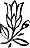

Sevgili Bhagwan,
Gerçek din nedir?
Din insanların anladıkları şey değildir. Din Hıristiyanlık değildir. Hinduizm değildir, Müslümanlık değildir. Bu sözde din ölü bir kayadır.
Ben size dini değil dindarlığı öğretiyorum -sürekli yönünü değiştiren, fakat nihayet okyanusa varan bir ırmağı.
Bir kaya çok eski olabilir, çok daha deneyimli, bir Veda'dan daha yaşlı olabilir, fakat bir kaya bir kayadır ve ölüdür. Mevsimlerle devinmez, varoluşla devinmez; sadece orada yatar. Hiç şarkı söyleyen, dans eden bir kaya gördünüz mü?
Benim için din bir niteliktir, bir kurum, bir örgüt değildir.
Dünyada varolan tüm dinler -ki sayıları hiç az değildir, dünyada üçyüz din vardır- ölü kayalardır. Onlar akmazlar, onlar değişmezler, çağla birlikte hareket etmezler. Ve ölü olan hiçbir şey size yardım etmez- tabii eğer bir mezar yapmak istemiyorsanız, belki o zaman kayanın yardımı olabilir.
Tüm sözde dinler yaşantınızı, sevginizi, sevincinizi yıkarak ve kafalarınızı Tanrı hakkında, cennet ve cehennem, reenkarnasyon (genedoğum) ve çeşitli saçmalıklar hakkında fantazilerle, kuruntularla ve halüsinasyonlarla doldurarak size mezar kazıyorlar.
Ben akışa, değişime, devinime güvenirim… çünkü yaşamın doğası budur. O sadece tek bir süreklilik bilir ve o da değişimdir. Asla değişmeyen tek şey değişimdir; bunun dışında her şey değişir. Bazen sonbahardır ve ağaçlar çıplaklaşır. Tüm yapraklar şikâyet etmeden yere düşerler; sessizce, huzurlu bir şekilde geldikleri yer olan toprağın içine karışırlar. Gökyüzünün karşısında kendilerine özgü bir güzellikleri vardır ve yüreklerinde müthiş bir güven olmalıdır, zira eğer eski yapraklar gittiyse yenilerinin geleceğini bilirler. Ve çok geçmeden taze, daha genç ve daha narin yeni yapraklar çıkmaya başlar.
Bir din ölü bir kurum değil fakat bir tür dindarlık, doğruluk, içtenlik, doğallık, evrene kendini bırakıverme, sevgi dolu bir yürek, bütüne karşı bir dostluk içeren bir niteliktir. Bunlar için kutsal kitaplara gerek yoktur.
Esasında hiçbir yerde kutsal kitap yoktur. Sözde kutsal kitaplar iyi bir edebi eser bile değildirler. İsabet ki kimse bunları okumuyor, zira bunların çoğu çirkin pornografiyle doludur.
Hakiki dindarlığın peygamberlere, kurtarıcılara, kutsal kitaplara, kiliselere, papalara, rahiplere ihtiyacı yoktur -çünkü dindarlık yüreğinizin çiçek açmasıdır. O varlığınızın en merkezine ulaşmaktır. Ve varlığınızın en ortasına ulaştığınız an bir güzellik, saadet, sessizlik, ışık patlaması olur. Tümüyle farklı bir kişi olmaya başlarsınız. Yaşamınızda karanlık olan her şey ve yaşamınızda yanlış olan her şey kaybolur. Yaptığınız her şey tam bir bütünlük ve mutlak bir farkındalıkla yapılır.
Ben tek bir fazilet tek bir dindarlık bilirim ve o da farkındalıktır.
Eğer dindarlık tüm dünyaya yayılırsa dinler silinip gider. Ve insan ne Hıristiyan, ne Müslüman ne de Hindu olmayıp sadece insan olduğu zaman bu insanlık için büyük bir nimet olacaktır. Bu ayrımlar, bu sınırlar tarih boyunca binlerce savaşın nedeni olagelmiştir. Eğer insanın tarihine bakarsanız geçmişte çılgınca yaşamış olduğumuzu söylemekten kendinizi alamazsınız. İnsanlar Tanrı adına, kilise adına, hiçbir kanıtı olmayan ideolojiler adına birbirlerini öldüregelmişlerdir.
Dünyada henüz din ortaya çıkmadı.
İnsanlığın atmosferi dindarlık olmadığı sürece hiçbir din olmaz. Fakat kurumlaşmaması için ben bunu dindarlık diye adlandırmakta ısrar ediyorum. Sevgiyi kurumlaştıramazsınız. Hiç sevgi kiliseleri, sevgi tapınakları, sevgi camileri duydunuz mu? Sevgi başka bir bireyle yaşanan bireysel bir durumdur. Ve dindarlık tüm evrene yönelmiş olan bireyle yaşanan daha büyük bir aşk hikâyesidir:
Bir insan tüm evrene, ağaçlara, dağlara, ırmaklara, okyanuslara, yıldızlara aşık olduğu zaman duanın ne olduğunu bilir. O sözsüzdür.... Yüreğindeki derin bir dansı ve hiç sesi olmayan bir müziği tanır, ilk kez olarak ebedi olanı, ölümsüz olanı, her değişimde geri kalanı -yaşamını yeni baştan yenileyeni- deneyimler. Ve dindar bir insan olup Hıristiyanlığı, Müslümanlığı, Budizmi, Jainizmi, Hinduizmi terk eden biri ilk kez bireyselliğini ifade eder.
Dindarlık bireysel bir olaydır.
Dindarlık sizden tüm evrene bir sevgi mesajıdır. Ancak o zaman tüm yanlış anlayışları geride bırakan bir barış gelir.
Oysa bu dinler insanları sömüren, insanları köleleştiren, insanları inanmaya zorlayan -ve tüm inançlar akla karşıdır-İnsanları yüreğinden değil, sadece belleğinden geldiği için hiçbir anlam ifade etmeyen dualar okumaya zorlayan parazitler olagelmişlerdir.
Bana Leo Tolstoy'un güzel hikâyesi sıkça anlatılmıştır. Hikâye büyük bir gölün ortasındaki küçük bir adada yaşayan eğitimsiz, kültürsüz üç köylü hakkındadır. Milyonlarca insan onlara gelip tapınıyordu ve devrimden önceki eski Rusya'nın başpiskoposunun ilgisini çekti bu. Kiliseler boştu, kimse başpiskoposa gelmiyordu. Ve Rus kilisesi dünyadaki en eski ve en dinsel inançlarına sadık (Ortodoks) kilisedir ve insanlar Hıristiyanlığın gizleri verilmemiş olan bu üç insana gidiyordu -nasıl aziz olmuşlardı?
Hindistan'da aziz olmak kolaydır, fakat Hıristiyanlıkta kolay değildir. İngilizce saint ('aziz') sözcüğü sanctus kökünden gelir. Bu tasvip (sanction) edilmediğiniz, papa ya da başpiskopos tarafından tasdik edilmediğiniz sürece bir aziz olarak kabul edilemeyeceğiniz anlamına gelir. Fakat insanlar bu üç köylünün çok aziz olduğunu söylüyordu...
Başpiskopos bir gün hiddetle bir tekneye binip bir ağacın altında oturan bu üç köylüye gitti. Onlara baktı ve inanamadı: bunlar ne çeşit azizdi? Hemen kendini tanıttı ve açıkladı, 'Ben başpiskoposum.’ Üç aziz de ayaklarına eğildiler. O zaman başpiskopos rahatladı, 'Bunlar aptal ve işler henüz kontrol edilemeyecek düzeyde değil' diye düşündü.
Onlara ‘Siz aziz misiniz?' diye sordu.
Köylüler birbirlerine baktılar ve şöyle dediler, 'Bu sözcüğü hiç duymadık. Bizler eğitimsiz, kültürsüz insanlarız. Bizimle Yunanca konuşma; sadece ne demek istediğini söyle,'
Tanrım,' dedi başpiskopos, bir azizin ne demek olduğunu bilmiyor musunuz? Hıristiyan duasını biliyor musunuz?'
Yine birbirlerine baktılar ve sanki 'sen söyle' der gibi birbirlerini dürttüler.
Başpiskopos şimdi gerçekten güçlü hale gelmişti. 'Bana duanızı söyleyin dedi.
Şöyle yanıt verdiler, 'Bizler eğitimsiziz. Hıristiyan duasının ne olduğunu bilmiyoruz. Biz kendi duamızı yaptık '
Başpiskopos güldü. Kimse kendi duasını yapmaz. Duanın kilise tarafından onaylanması gerekir. Her neyse, sizin duanız ne?'
Azizler sıkıldılar, utandılar ve sonunda şöyle dediler, 'Sorduğunuz İçin reddedemeyiz. Fakat bizim duamız pek dua değil... Tanrının üç şekli olduğunu duyduk -Tanrı, kutsal ruh ve oğul- böylece kendi duamızı yapmayı düşündük. Duamız şöyle: Sen üçsün, biz üçüz, bize merhamet et:
Başpiskopos şöyle dedi: 'Budalalar, bunun bir dua olduğunu mu sanıyorsunuz? Size kilisenin onayladığı duayı öğreteceğim.'
Fakat dua çok uzundu ve üçü birden bir ağızdan şöyle dediler: Bu hatırlayamayacağımız kadar uzun bir dua. Elimizden geleni yapacağız, fakat lütfen bir kez daha tekrarlayın,' Ve üçüncü bir kez daha tekrarlamasını istediler, çünkü dua çok uzundu. 'Eğer başını hatırlıyorsak sonunu unutuyoruz, eğer sonunu hatırlıyorsak başını unutuyoruz. Eğer başını ve sonunu hatırlıyorsak ortasını unutuyoruz.’
Başpiskopos 'eğitim görmeniz gerek', dedi.
Fakat şöyle yanıt verdiler, Yazamıyoruz, yoksa duanızı yazardık. Bir kez daha söyleyin, elimizden geleni yapacağız.'
Başpiskopos milyonlarca insanın ibadet ettiği bu üç budalayı kendine çevirdiği için pek mutluydu. Duayı üçüncü kez tekrarladı, azizler ayaklarına eğildiler ve başpiskopos teknesine geri döndü.
Tam gölün ortasındayken kocaman bir şeyin kendine doğru geldiğini gördü. Buna inanamadı, Bu ne olabilirdi?'
Dua etmeye başladı. Yaklaştıkça bunun gölün üstünde yürüyen o üç budala olduğunu anladı. Tanrım!' dedi, 'sadece İsa suyun üstünde yürümüştü.'
Ve azizler ellerini kavuşturup gelerek şöyle dediler, 'Duayı unuttuk ve düşündük ki… bir kez daha,'
Onların su üstünde durduğunu gören başpiskopos gerçeği kavradı. Dedi ki: 'Sizin duaya ihtiyacınız yok. Sizin duanız mükemmel. Ben tüm hayatım boyunca dua ettim, Rusya Ortodoks Kilisesinde en yüksek göreve geldim, fakat ben suda yürüyemem. Öyle görünüyor ki Tanrı sizinle. Gidin ve eski duanızı edin,' Azizler çok mutlu oldular ve dediler ki, 'Çok minnettarız, çünkü bu uzun dua bizi öldürecekti!'
Bu geleneksel, Ortodoks dinin öldüğünü anlatan güzel bir hikâyedir, Dindarlık evrene sevgi ve güzel koku sunan bir birey gibi yüreğinizin içinde yükselmelidir.
Dindar biri için Tanrı bile gerekli değildir, zira Tanrı kanıtlanmamış bir hipotezdir ve dindar biri kanıtlanmamış bir şeyi kabul edemez. O sadece hissettiğini kabul edebilir.
Ne hissediyorsunuz? Nefesinizi, kalp atışınızı... Varoluş nefes alır ve nefes verir, varoluş her an size yaşamınızı vermeyi sürdürür.
Fakat siz hiç ağaçlara bakmadınız, siz hiç çiçeklere, onların güzelliğine bakmadınız ve onların kutsal olduğunu hiç düşünmediniz. Onlar gerçekten varolan tek Tanrıdır.
Tüm bu varoluş tanrısallıkla doludur. Eğer siz dindarlıkla doluysanız, tüm varoluş da aynı anda tanrısallıkla dolar. Benim için din budur.
Satyam-Shivam-Sundram,
12. Oturum
13 Kasım 1987